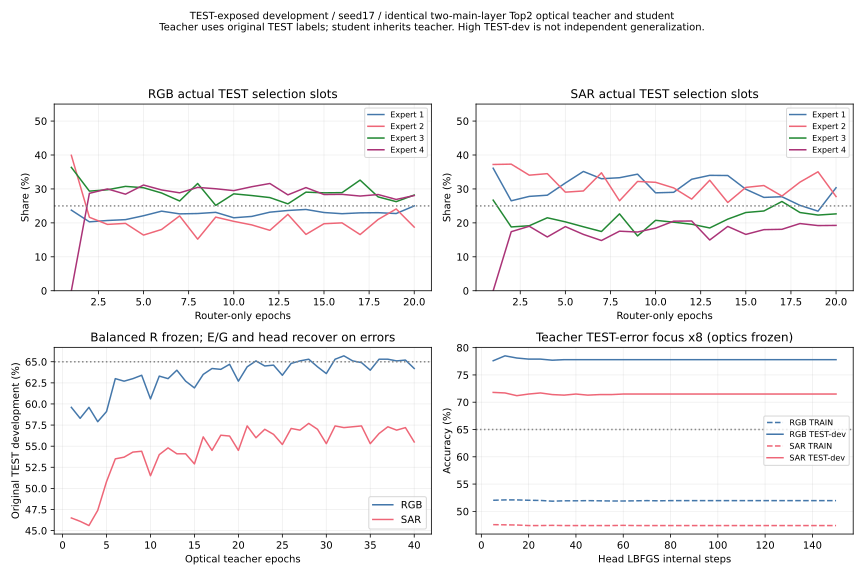

全部原TEST暴露开发，seed17。教师用TEST硬标签定向拟合，学生继承这些权重；不是独立TEST、不是等预算结构优势。
| 模态 | TRAIN | VAL（只记录） | 原TEST开发 |
|---|---|---|---|
| RGB | 52.03% | 41.50% | 77.60% |
| SAR | 47.57% | 35.40% | 71.80% |
同结构教师原唯一Linear在固定光学特征上学习9812 TRAIN呈现、27584 TEST呈现；原错例多回放，TEST教师权重提高8倍。学生GT只用于TRAIN，TEST仅softKL，但学生选中继承教师权重的E0。这满足当前TEST开发门槛，不能称独立蒸馏收益。TRAIN/VAL已明显降低，不能据高开发数宣称未见数据泛化达到65%。
PT SHA：e496010c2ecd4b9eef3164f89db2fc753ab444b0ca86bbfde27bb2598f4b3d53
RGB302错，SAR422错；全部原TEST两域各1000保持，未删除错误样本。逐样本清单仅保存于非Git run，并附remote/local SHA。最终RGB修正227个原错例、也新增149个错误，净增78；SAR修正321个原错例、也新增181个错误，净增140，不能说所有类别都改善。
| 模态 | 类 | 原正确/100 | 原错误/100 | 原召回 | 最终正确/100 |
|---|---|---|---|---|---|
| RGB | HerbaceousVegetation | 21 | 79 | 21.00% | 66 |
| RGB | Highway | 41 | 59 | 41.00% | 67 |
| RGB | PermanentCrop | 65 | 35 | 65.00% | 81 |
| RGB | Pasture | 73 | 27 | 73.00% | 74 |
| RGB | Forest | 78 | 22 | 78.00% | 75 |
| RGB | River | 78 | 22 | 78.00% | 85 |
| RGB | SeaLake | 78 | 22 | 78.00% | 85 |
| RGB | AnnualCrop | 82 | 18 | 82.00% | 73 |
| RGB | Industrial | 90 | 10 | 90.00% | 89 |
| RGB | Residential | 92 | 8 | 92.00% | 81 |
| SAR | HerbaceousVegetation | 33 | 67 | 33.00% | 73 |
| SAR | Highway | 37 | 63 | 37.00% | 62 |
| SAR | Pasture | 37 | 63 | 37.00% | 70 |
| SAR | AnnualCrop | 38 | 62 | 38.00% | 69 |
| SAR | PermanentCrop | 51 | 49 | 51.00% | 67 |
| SAR | Residential | 62 | 38 | 62.00% | 52 |
| SAR | Industrial | 68 | 32 | 68.00% | 76 |
| SAR | Forest | 70 | 30 | 70.00% | 57 |
| SAR | River | 83 | 17 | 83.00% | 92 |
| SAR | SeaLake | 99 | 1 | 99.00% | 100 |
count/(2N)，四项合计100%，均匀参考各25%；被选频率count/N则合计200%。功率不是选择频率。R在后续专家恢复和教师/学生头拟合中均冻结，最终PT路由还须从自身完整预测文件复算。
| 划分 | 模态 | E1 | E2 | E3 | E4 |
|---|---|---|---|---|---|
| train | RGB | 19.60% | 18.13% | 28.87% | 33.40% |
| train | SAR | 24.33% | 33.60% | 19.43% | 22.63% |
| val | RGB | 18.85% | 17.85% | 27.75% | 35.55% |
| val | SAR | 23.60% | 34.00% | 18.50% | 23.90% |
| test | RGB | 23.00% | 21.00% | 27.65% | 28.35% |
| test | SAR | 25.15% | 32.00% | 23.05% | 19.80% |
同结构四专家、两主层E→OEO→G→OEO、router224/global478、唯一Linear784→10，无CNN/前端/新推理模块。主图固定D2NN四格不动。
